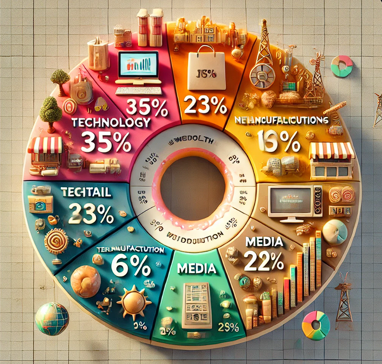
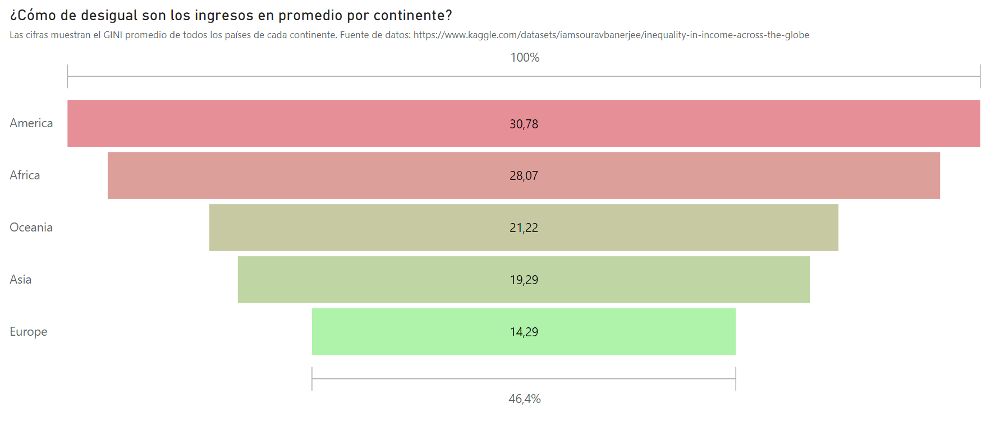
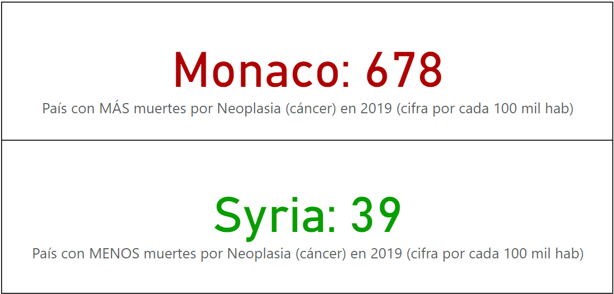
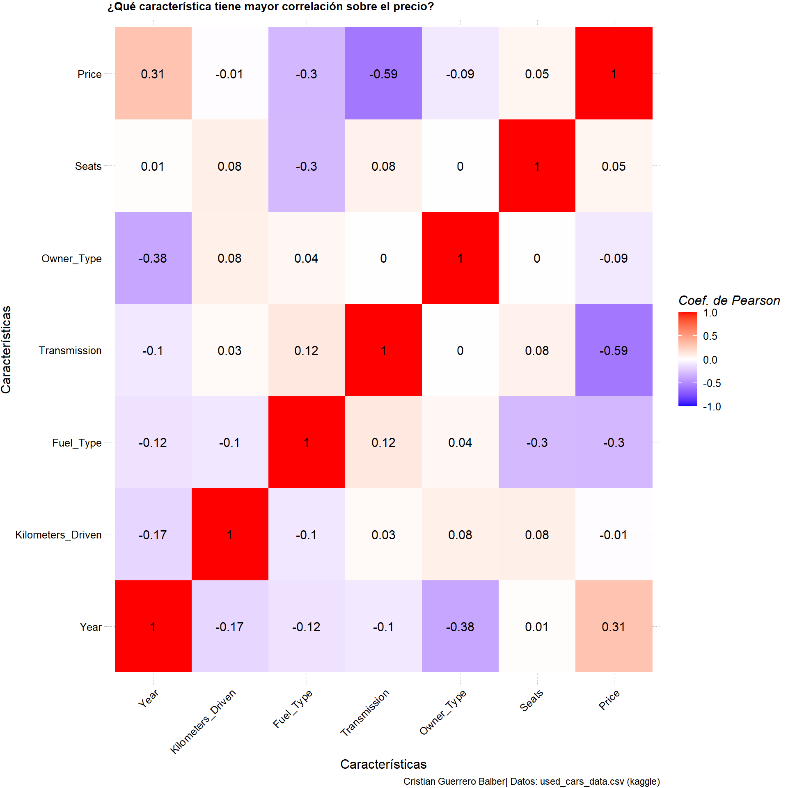
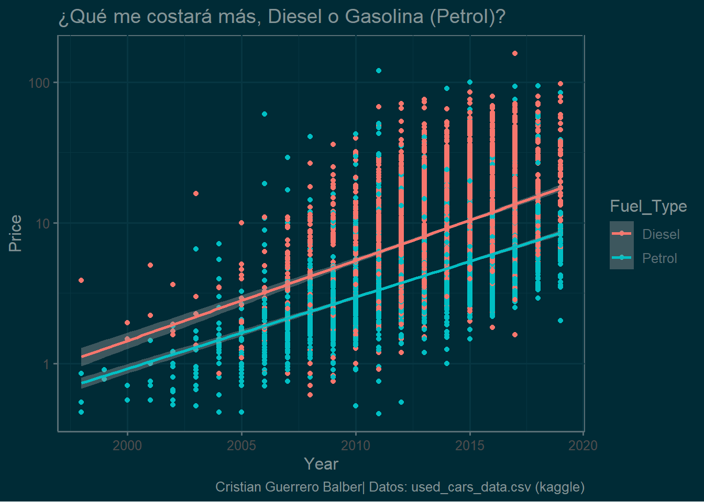
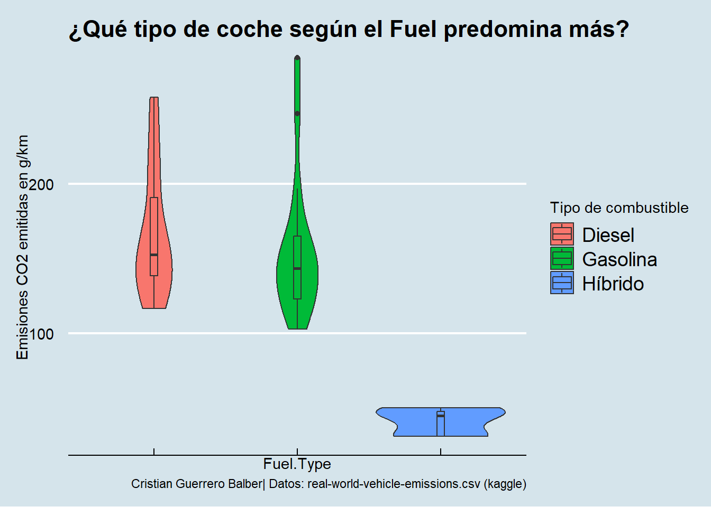
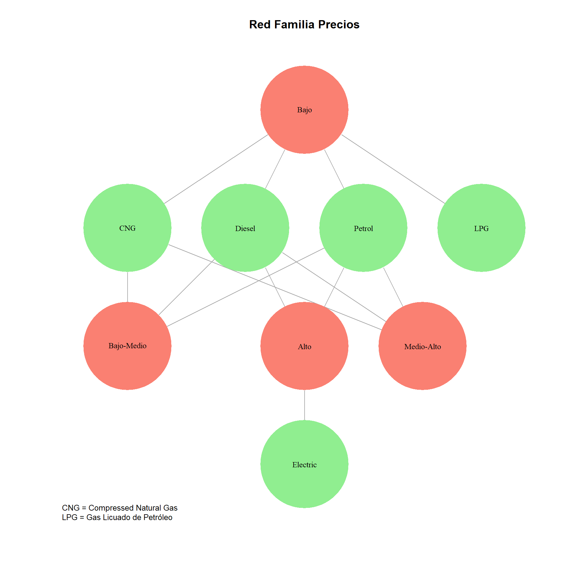
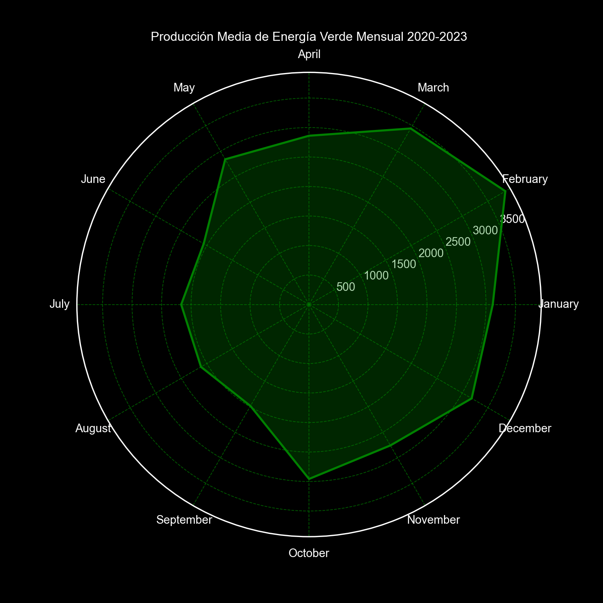
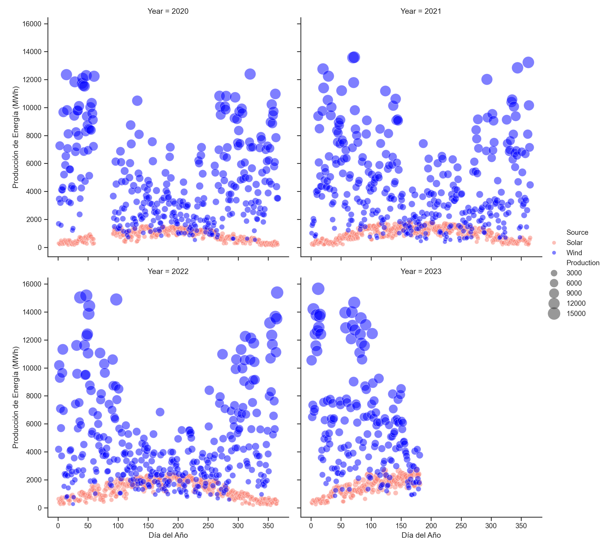
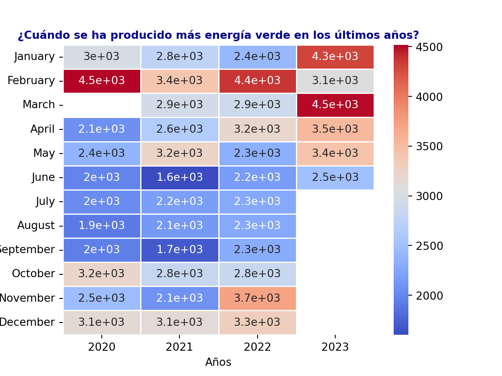

Audiencia: Grupo de estudiantes de economía Objetivo: Mostrar los sectores industriales donde se genera más riqueza con todas las posibilidades de estrategia que ello conlleva, como la inversión o el estudio de un sector u otro. Visualización: Herramienta Datawrapper para realizar un gráfico de rosquilla, convirtiendo los valores netos a porcentajes. Conjunto de datos: Se realiza una agregación por sector industrial sumando los valores netos por cada registro. La fuente de datos es la siguiente: https://www.kaggle.com/datasets/muhammadehsan02/top-1000-wealthiest-people-in-the-world/data
Día 2: Neo
Audiencia: Grupo de estudiantes de economía Objetivo: Informar sobre quiénes son las personas que dominan el planeta económicamente y las cantidades de sus riquezas. Visualización: Herramienta Datawrapper para realizar un gráfico de barras horizontal. Conjunto de datos: De nuevo, el origen de los datos es el mismo que antes: https://www.kaggle.com/datasets/muhammadehsan02/top-1000-wealthiest-people-in-the-world/data. Se realiza una agregación por nombre de persona y sumando sus riquezas, las cuales pueden proceder de diferentes sectores industriales y, por lo tanto, la misma persona puede aparecer en más de un registro.
Día 3: Makeover

Gráfico generado en PowerBI
Audiencia: Grupo de estudiantes de economía Objetivo: Mostrar los sectores industriales donde se genera más riqueza con todas las posibilidades de estrategia que ello conlleva, como la inversión o el estudio de un sector u otro. Visualización: En esta ocasión, se crea un gráfico muy visual y espectacular usando IA Generativa en base a la gráfica del primer día. El gran inconveniente de este tipo de herramientas para la creación de gráficas es el bajo control que se tiene sobre lo que aparece en la imagen por mucho que se refina el prompt. Por ejemplo, se ha distorsionado algunas etiquetas de sectores así como los valores asociados. Es decir, es una herramienta muy potente y espectacular pero aún mejorable desde el punto de vista del control. Conjunto de datos: Se utiliza como prompt la imagen gráfica del día 1 (Part-to-whole) además del siguiente texto: “Create an image of a pie chart with an original style, including 3D figures related to each industrial sector. The sectors should be represented as follows: Technology (35%) with images such as computers or smartphones, Retail (23%) with images like shopping bags or a storefront, Manufacturing (10%) with icons like gears or a factory, Telecommunications (6%) with symbols such as satellite dishes or cell towers, Media (6%) with elements like film reels or cameras, and Other (22%) with assorted icons that represent various industries. Include the labels with words of sectors and percentages and ensure that they are clear and undistorted.”
Día 4: Waffle
# Instalar y cargar los paqueteslibrary(waffle)# Datosdataset <-read.csv("datasets\\Top_1000_wealthiest_people_d4.csv")#Se convierten los datos a un vector nombradovalores <- (setNames(dataset$Net.Worth..in.billions., dataset$Company))# Crear el gráfico de wafflewaffle_chart <-waffle(valores, rows =10, size =1,colors =rainbow(length(valores))) +labs(title ="Distribución de la riqueza mundial por empresas", subtitle ="Gráfico de waffle de 100 unidades")# Mostrar el gráficowaffle_chart
Audiencia: Grupo de estudiantes de economía Objetivo: Mostrar la distribución de empresas que generan más riquezas a las personas más ricas del planeta. Cuanto más riqueza genera, más cuadrados de color tiene asociado. Visualización: Se utiliza un waffle chart utilizando la librería de R “waffle”. Conjunto de datos: El origen de los datos sigue siendo el mismo: https://www.kaggle.com/datasets/muhammadehsan02/top-1000-wealthiest-people-in-the-world/data. En esta ocasión, se realiza una agregación por empresas sumando el valor de la riqueza. Además, se normalizan los datos calculando la proporción sobre 100 de cada empresa y convirtiéndolas en un número entero para obtener este tipo de dato, necesario en tipo y forma para este tipo de gráfica.
Día 5: Diverging
library(ggplot2)# Datos de ejemplodatos <-read.csv("datasets\\Inequality in Income Spain Comparison_d5.csv")datos$Desigualdad <-ifelse(datos$Inequality.in.income..2021.>0, "Mayor desigualdad que España", "Menor desigualdad que España")# Crear el gráficoggplot(data = datos, aes(x =reorder(Country, Inequality.in.income..2021.), y = Inequality.in.income..2021., fill = Desigualdad)) +geom_bar(stat ="identity", width =0.5, color ="black") +coord_flip() +scale_fill_manual(values =c("pink", "lightblue")) +labs(title ="¿Qué países enfrentan una mayor desigualdad de ingresos en comparación con España?",x ="País",y ="Diferencia de GINI con respecto a España",fill ="Diferencia de desigualdad en ingresos") +theme_minimal() +theme(panel.spacing =unit(100, "lines"),plot.title =element_text(size =9, face ="bold"))
Audiencia: Grupo de estudiantes de economía Objetivo: Concienciar de la posición que ocupa España con respecto al resto de países del mundo en relación a la desigualdad de ingresos de sus habitantes. Visualización: Se utiliza la librería “ggplot2” de R. El gráfico elegido es un gráfico horizontal de barras modificando los colores en función de si es mejor o peor el resultado en comparación con España. Conjunto de datos:https://www.kaggle.com/datasets/iamsouravbanerjee/inequality-in-income-across-the-globe. Se modifica la columna “Inequality in income (2021)”, donde se muestra el GINI por país, para calcular cada una con respecto a España, restándole el valor GINI de España a cada valor GINI del resto de los países. De esta manera, se consigue el efecto deseado y se puede realizar una comparación con el país de interés.
Día 6: OECD (data day)

Gráfico generado en PowerBI
Audiencia: Grupo de estudiantes de economía Objetivo: Resaltar aquellos continentes con una mayor desigualdad en cuanto a ingresos en sus países. Visualización: Se realiza a través de PowerBI. Se usa una gráfica de embudo con un degradado de colores para mostrar los resultados de “peor” (mayor GINI promedio) a “mejor” (menor GINI promedio). Conjunto de datos: Se usa el mismo dataset del día anterior: https://www.kaggle.com/datasets/iamsouravbanerjee/inequality-in-income-across-the-globe. En esta ocasión, se ha realizado el promedio de todos los paises por continente y se ha ordenado de mayor a menor.
Categoría: “Distributions”
Día 7: Hazards
import pandas as pdimport seaborn as snsimport matplotlib.pyplot as plt# Se carga el datasetdf = pd.read_csv("datasets//annual_deaths_by_causes.csv")# Se realizan las transformaciones adecuadas para la correcta visualizacióndf = df[df.code !="OWID_WRL"]cols_causes = df.columns[3:]df = pd.melt(df,id_vars = ['country', 'code'],value_vars = cols_causes,var_name ="cause_of_death",value_name ="number_of_people")df = df.groupby('cause_of_death')['number_of_people'].sum().reset_index()df.sort_values(by ='number_of_people', ascending =False, inplace =True)df.reset_index(drop =True, inplace =True)# Cálculo de características del boxplotQ1 = df.number_of_people.quantile(0.25)Q3 = df.number_of_people.quantile(0.75)IQR = Q3 - Q1lim_sup = Q3 + IQR *1.5lim_inf = Q1 - IQR *1.5# Identifico los outliersoutliers = df[(df.number_of_people > lim_sup) | (df.number_of_people < lim_inf)]# Se carga el tema "pastel" de snssns.set_theme(style="ticks", palette="pastel")# Se pinta el boxplotsns.boxplot(y="number_of_people", data=df, palette = ["g"], legend =False)plt.title("Distribución de muertes mundiales acumuladas por tipo de enfermedad (1990-2019)")# Etiqueto los outliersfor i, row in outliers.iterrows(): plt.text(-0.02, row.number_of_people, f'{row.cause_of_death}', color ='black', ha ='right', va ='center', fontsize =8)# Muestro la figuraplt.show()
Audiencia: Grupo de Médicos del Hospital Universitario Puerta del Mar en Cádiz, España Objetivo: Se pretende mostrar la distribución de número acumulado de causas de muerte desde 1990 hasta 2019 con el fin de determinar si existen ciertas enfermedades que, en comparación con el resto, tienen una incidencia mucho más alta o baja. Visualización: Se utiliza la librería matplotlib.pyplot junto con seaborn de python. Se escoge un gráfico boxplot, ideal para identificar visualmente outliers. Conjunto de datos:https://www.kaggle.com/datasets/madhurpant/world-deaths-and-causes-1990-2019. Previo al graficado de datos, se ha de calcular programáticamente los outliers para que puedan ser etiquetados en el boxplot. De esta manera, la audiencia puede identificar fácilmente aquellas enfermedades que están fuera de la normalidad.
Día 8: Circular
library(tidyr)library(dplyr)library(ggplot2)library(ggrepel)library(tidyverse)#Obtengo el dataframe del csvdf <-read.csv("datasets\\annual_deaths_by_causes.csv")#Extraigo todas las columnas de las causas de muertecols_causes <-names(df)[4:ncol(df)]#Se transforma el dataframedf_transformed <- df %>%pivot_longer(cols = cols_causes, names_to ="cause_of_death",values_to ="number_of_people") %>%filter(country =="Spain") %>%group_by(cause_of_death) %>%summarise(total_people =sum(number_of_people)) %>%arrange(desc(total_people)) %>%drop_na()#Se añaden los porcentajestotal_sum <-sum(df_transformed$total_people)df_transformed <- df_transformed %>%mutate(percentage =round((total_people / total_sum)*100, 0))#Se divide el df en dos partes: las primeras 5 filas y el restodf_top5 <- df_transformed[1:5, ]df_others <- df_transformed[6:nrow(df), ]#Sumar los valores de otrosdf_others_summary <- df_others %>%summarise(cause_of_death ="Others",total_people =sum(total_people, na.rm =TRUE),percentage =sum(percentage, na.rm =TRUE))#Se combinan los primeros 5 valores y el grupo "Otros"df_final <-bind_rows(df_top5, df_others_summary)#Se realiza un gráfico de sectores con etiquetas fuera del gráfico# Obtener las posicionesdf2 <- df_final %>%mutate(csum =rev(cumsum(rev(percentage))), pos = percentage/2+lead(csum, 1),pos =if_else(is.na(pos), percentage/2, pos))ggplot(df_final, aes(x ="" , y = percentage, fill =fct_inorder(cause_of_death))) +geom_col(width =1, color =1) +coord_polar(theta ="y") +scale_fill_brewer(palette ="Pastel1") +geom_label_repel(data = df2,aes(y = pos, label =paste0(percentage, "%")),size =4.5, nudge_x =1, show.legend =FALSE) +guides(fill =guide_legend(title ="Grupo")) +ggtitle("Distribución de Causas de Muerte en España") +theme_void()
Audiencia: Grupo de Médicos del Hospital Universitario Puerta del Mar en Cádiz, España Objetivo: Focalizar los esfuerzos de investigación para las enfermedades más relevantes Visualización: Se utiliza ggplot2 con la librería ggrepel. Con esto se consigue un gráfico de sectores con el etiquetado fuera del propio gráfico con una visualización, como resultado, más clara. Conjunto de datos: Origen: https://www.kaggle.com/datasets/madhurpant/world-deaths-and-causes-1990-2019. Se necesita transformar el dataset original cambiando la estructura, pasando las columnas de las enfermedades a una sola columna como “causes_of_death” y sus valores a otra columna llamada “number_of_people”. A partir de aquí, se realizan transformaciones varias de limpieza, agregaciones y sumas, para obtener los valores mostrados. Se comprueba que España tiene una distribución similar a la mundial, dado que las tres grandes enfermedades que afectan a este país son las mismas.
Día 9: Major/Minor

Gráfico generado en PowerBI
Audiencia: Grupo de Médicos del Hospital Universitario Puerta del Mar en Cádiz, España Objetivo: Mostrar los países con mayor y menor incidencia en muertes debido a neoplasia (cáncer) en 2019 con el fin de reflexionar sobre qué puede llevar a dichos países a alcanzar estas cifras. Visualización:PowerBI. Se escoge dos visualizaciones de tipo Tarjeta para mostrar el país así como la cifra de incidencias por cada 100 mil habitantes. Conjunto de datos:https://www.kaggle.com/datasets/madhurpant/world-deaths-and-causes-1990-2019, https://worldpopulationreview.com/. Para poder realizar dicha visualización, con PowerBI se importan los datos preprocesados desde Python realizando un derretido de las columnas de enfermedades. Luego, se crean campos calculados para mostrar los datos deseados, el país con mayor/menor número de muertes por cada 100 mil habitantes y la cifra. Además, se añaden ciertos filtros para que solo se tenga en cuenta la enfermedad de neoplasia y el año 2019 (fecha más actual de la que se tienen datos).
Día 10: Physical
Audiencia: Grupo de Médicos del Hospital Universitario Puerta del Mar en Cádiz, España Objetivo: Transmitir una visión general de la distribución de afección de la enfermedad con la incidencia más alta de muertes en el planeta. Visualización:Datawrapper. Así como los mapas físicos muestran con colores las propiedades físicas de un mapa, se utiliza el mismo concepto para mostrar la incidencia de muertes por enfermedades cardiovasculares por país (por cada 100 mil habitantes). Conjunto de datos:https://www.kaggle.com/datasets/madhurpant/world-deaths-and-causes-1990-2019, https://worldpopulationreview.com/. Para poder realizar dicha visualización, primero se preprocesan los datos con Python realizando un derretido de las columnas de enfermedades. Luego, se importan los datos a PowerBI, donde se realizará una conexión entre dos tablas de dos fuentes de datos diferentes (mencionadas anteriormente). Estas tienen como campo identificativo el país. A partir de aquí, se puede añadir la cantidad de habitantes por país y realizar el cálculo de número de muertes por cada 100 mil habitantes. Además, se añaden ciertos filtros para que solo se tenga en cuenta las enfermedades cardiovasculares y el año 2010 (fecha más actual de la que se tienen datos para combinar en ambos datasets). Una vez se preprocesan los datos, se importan a Datawrapper para poder crear el mapa interactivo y poder embeberlo en RStudio con Quarto.
Día 11: Mobile-friendly
Audiencia: Grupo de Médicos del Hospital Universitario Puerta del Mar en Cádiz, España Objetivo: Visualización: Datawrapper. Se usa esta herramienta por tener la opción de embeber de forma interactiva y, además, hacerlo adaptativo para móviles. Para ello, se ha optado por una visualización en tabla con degradado por gravedad de incidencia. Para hacerlo “mobile-friendly” se activan las opciones “Mobile fallback” y “Compact layout”. Además, se le da interactividad mediante la activación de búsqueda de países mediante la opción “Make searchable”. Conjunto de datos:https://www.kaggle.com/datasets/madhurpant/world-deaths-and-causes-1990-2019, https://worldpopulationreview.com/. Para esta visualización, se aprovecha todo el procesamiento de las gráficas anteriores con la diferencia que se ha filtrado por una enfermedad distinta, “chronic_respiratory_diseases”, que es la tercera con más incidencia en el planeta.
Día 12: Reuters Graphics (theme day)
Audiencia: Grupo de Médicos del Hospital Universitario Puerta del Mar en Cádiz, España Objetivo: Reflexionar sobre qué es lo que está ocurriendo en el mundo para que el número de fallecidos mundiales a causa de ciertas enfermedades haya aumentado en las últimas décadas. Visualización: Datawrapper. Se usa un gráfico de líneas para visualizar la evolución de las enfermedades. Al usar esta herramienta embebida, se da la posibilidad a la audiencia de revisar los datos de forma interactiva. Conjunto de datos:https://www.kaggle.com/datasets/madhurpant/world-deaths-and-causes-1990-2019. Se preparan los datos eliminando las columnas de “country” y de “code”. Además, se realiza una agrupación por “year” para graficar la evolución. Se calcula la media del ratio de crecimiento de la población mundial en base a https://worldpopulationreview.com/.
Categoría: “Relationships”
Día 13: Family
#Se usará la librería igraphlibrary(dplyr)library(ggplot2)# Se carga el dfdf <-read.csv('datasets\\used_cars_data.csv')#Se seleccionan las instancias a graficardf1 <-select(df, Year, Fuel_Type, Price)#Se eliminan valores faltantesdf1 <-na.omit(df1)#Se grafica la cantidad de datos existentes según el tipo de Fuellibrary(ggthemes)library(patchwork)library(scales)ggplot(df1, aes(Year, fill = Fuel_Type)) +geom_bar(position ='fill') +scale_y_continuous(labels = percent) +theme_solarized() +plot_annotation(title ="¿Qué tipo de coche según el tipo de Fuel predomina más?",caption ="Cristian Guerrero Balber| Datos: used_cars_data.csv (kaggle)")
Audiencia: Conferencia sobre Energía sostenible
Objetivo: Mostrar la cantidad de instancias por familia de Fuel. Esta visualización quiere mostrar el reflejo de la proporción de coches según el Fuel que existen (ojo, esto puede setar sesgado por la fuente de datos).
Visualización: Se utiliza la de la librería ggplot de R. Se usa la extensión ggtheme para darle un aspecto visual atractivo y original. Además, se usa el gráfico de barras apiladas para mostrar la proporción de instancias optimizando la cantidad de código.
Conjunto de datos: Se procesan los datos simplemente seleccionando las características a vincular y limpiándo el df resultante de nulos. Fuente: https://www.kaggle.com/datasets/ayushparwal2026/cars-dataset/data
Día 14: Heatmap
#Se usará la librería ggplot2library(ggplot2)library(dplyr)library(reshape2)library(ggthemes)# Se carga el dfdf <-read.csv('datasets\\used_cars_data.csv')#Se seleccionan las características a comparardf1 <-select(df, Year, Kilometers_Driven, Fuel_Type, Transmission, Owner_Type, Seats, Price)#Se realiza una codificación de características no numéricas# Supongamos que df es tu dataset y 'columna_categorica' es una columna no numéricadf1$Fuel_Type <-as.numeric(as.factor(df1$Fuel_Type))df1$Transmission <-as.numeric(as.factor(df1$Transmission))df1$Owner_Type <-as.numeric(as.factor(df1$Owner_Type))#Se calcula la matriz de correlacionesdf_corr <-cor(df1, use ="complete.obs")#Se convierte la matriz a formato largodf_corr <-melt(df_corr)# Crear el gráfico de la matriz de correlacionesggplot(data = df_corr, aes(x = Var1, y = Var2, fill = value)) +geom_tile() +scale_fill_gradient2(low ="blue", high ="red", mid ="white", limit =c(-1, 1), name ="Coef. de Pearson") +geom_text(aes(label =round(value, 2)), # Redondear y mostrar los valorescolor ="black", # Color del textosize =4) +theme_pander() +theme(axis.text.x =element_text(angle =45, hjust =1)) +labs(title ="¿Qué característica tiene mayor correlación sobre el precio?", x ="Características", y ="Características",caption ="Cristian Guerrero Balber| Datos: used_cars_data.csv (kaggle)") +theme(plot.title =element_text(size =10))

Audiencia: Conferencia sobre Energía sostenible Objetivo: Mostrar las diferentes correlaciones entre distintas características y el precio. Concretamente, y en el tipo de conferencia que es, parece ser que el tipo de fuel y el precio no tiene una correlación lineal demasiado alta, mientras que la característica que tiene una mayor correlación con el precio es el tipo de transmisión. Visualización: Se utiliza un heatmap de ggplot2 en RConjunto de datos: Se procesan los datos seleccionando las características a correlacionar. Se codifica en forma de número las columnas que no tienen un valor numérico. Luego, se obtiene la matriz de correlaciones y, por último, se grafica. Fuente: https://www.kaggle.com/datasets/ayushparwal2026/cars-dataset/data
Día 15: Historical
#Se usará la librería igraphlibrary(dplyr)library(ggplot2)# Se carga el dfdf <-read.csv('datasets\\used_cars_data.csv')#Se seleccionan las instancias a graficardf1 <-select(df, Year, Fuel_Type, Price)#Se eliminan valores faltantesdf1 <-na.omit(df1)#Se itera entre los distintos tipos de fuel para ver si hay una cantidad#suficientemente representativa de cada uno para graficarfuel_types <-c(unique(df$Fuel_Type))for (fuel_type in fuel_types){ df_ <- df1 %>%filter(Fuel_Type == fuel_type) %>%select(Fuel_Type)cat("% de instancias para", fuel_type, ":", round((nrow(df_) /nrow(df1)) *100, 2), "%\n")}
% de instancias para CNG : 0.93 %
% de instancias para Diesel : 53.25 %
% de instancias para Petrol : 45.62 %
% de instancias para LPG : 0.17 %
% de instancias para Electric : 0.03 %
library(ggthemes)library(patchwork)#Se filtra solo por los más representativosdf2 <- df1 %>%filter(Fuel_Type =='Diesel'| Fuel_Type =='Petrol')ggplot(df2, aes(Year, Price, colour = Fuel_Type)) +geom_point() +stat_smooth(method ='lm') +scale_x_log10() +scale_y_log10() +theme_solarized(light =FALSE) +labs(title ="¿Qué me costará más, Diesel o Gasolina (Petrol)?",caption ="Cristian Guerrero Balber| Datos: used_cars_data.csv (kaggle)")

Audiencia: Conferencia sobre Energía sostenible
Objetivo: Mostrar la evolución del precio en los últimos años de los coches de tipo Diesel y Gasolina.
Visualización: Se usa RStudio con ggplot, con un estilo de la extensión ggthemes. Además, se visualiza por colores los distintos tipos de Fuel. Se ha usado la transformación logaritmica para minimizar el efecto visual de los outliers.
Conjunto de datos: Se procesan los datos seleccionando las características a graficar. Se seleccionan los tipos de fuel más representativos en el dataset. Fuente: https://www.kaggle.com/datasets/ayushparwal2026/cars-dataset/data
Día 16: Weather
#Se usará la librería igraphlibrary(dplyr)library(ggplot2)# Se carga el dfdf <-read.csv('datasets\\2021.Vans_Aggregated.csv')#Se grafica la cantidad de datos existentes según el tipo de Fuellibrary(ggthemes)ggplot(df, aes(Fuel.Type, WLTP.CO2.emissions.weighted..g.km., fill = Fuel.Type)) +geom_violin() +geom_boxplot(width =0.05) +theme_economist() +scale_fill_discrete(labels =c('Diesel', 'Gasolina', 'Híbrido'),name ='Tipo de combustible') +theme(axis.text.x =element_blank(),legend.position ='right') +labs(y ="Emisiones CO2 emitidas en g/km",title ="¿Qué tipo de coche según el Fuel predomina más?",caption ="Cristian Guerrero Balber| Datos: real-world-vehicle-emissions.csv (kaggle)")

Audiencia: Conferencia sobre Energía sostenible
Objetivo: Mostrar la gran diferencia de la distribución de emisiones de CO2
Visualización:RStudio con ggplot. Se usa un gráfico de violines junto con boxplots, que muestra no solo la distribución de datos sino la densidad de los mismos por categorías. Se muestra claramente como la distribución de las emisiones de los coches híbridos es, de media, 3 veces más baja que las de diesel y gasolina. Además, la varianza de los datos es menor con cero outliers y bigotes de boxplots muy cortos.
Conjunto de datos: No se realiza preprocesado de los datos salvo su carga y su visualización, ya que este tipo de visualización incorpora el propio tratamiento de los datos. Fuente: https://www.kaggle.com/datasets/konradb/real-world-vehicle-emissions
Día 17: Networks
#Se usará la librería igraphlibrary(igraph)library(dplyr)# Se carga el dfdf <-read.csv('datasets\\used_cars_data.csv')#Se seleccionan las instancias a graficardf1 <-select(df, Fuel_Type, Price)#Se discretiza la columna de precio en cuartilesdf1 <- df1 %>%mutate(Discreted_price =ntile(Price, 4)) %>%select(-Price) %>%#Se elimina la columna Pricemutate(Discreted_price =recode(Discreted_price,"1"="Bajo","2"="Bajo-Medio","3"="Medio-Alto","4"="Alto" ) )#Se eliminan duplicadosdf1 <-na.omit(unique(df1))# Crear el gráfico de red usando igraphgrafo <-graph_from_data_frame(df1, directed =FALSE)layout <-layout_with_sugiyama(grafo)# Configurar los colores de los nodosV(grafo)$color <-ifelse(V(grafo)$name %in%c("Bajo", "Bajo-Medio", "Medio-Alto", "Alto"), "salmon", "lightgreen")# Dibujar el gráfico de la familiaplot(grafo,layout = layout,vertex.size =50, vertex.label.cex =0.8,vertex.label.color ="black", # Color del textovertex.frame.color =NA, # Sin borde en los nodosmain ="Red Familia Precios")legend("bottomleft",legend =c("CNG = Compressed Natural Gas","LPG = Gas Licuado de Petróleo"),cex =0.8,bty ='n')

Audiencia: Conferencia sobre Energía sostenible
Objetivo: Mostrar relaciones en forma de red de precios según el tipo de fuel. Concretamente, concienciar que no existen conexiones entre la energía eléctrica y los coches de precios asequibles según este dataset.
Visualización: Se utiliza la de la librería igraph de R un tipo de gráfico concreto para establecer relaciones en redes. Ideal para mostrar relaciones entre tipo o familias de características.
Conjunto de datos: Se procesan los datos seleccionando las características a vincular y limpiándo el df resultante de nulos. Además, se discretiza la columna Price para obtener una escala cualitativa del precio y poder relacionarla con el tipo de fuel. Fuente: https://www.kaggle.com/datasets/ayushparwal2026/cars-dataset/data
Día 18: Asian Development Bank (data day)
#Se usará la librería igraphlibrary(dplyr)library(ggplot2)library(lubridate)library(tvthemes)# Se carga el dfdf <-read.csv('datasets\\ADB Climate Change Financing - 2023-based on commitments.csv')#Se transforma la columna de fecha de texto a fecha, y se limpia el df de nulosdf1 <- df %>%select(Date.Signed, Sector, Signed.amount....million.) %>%mutate(Signed.amount =suppressWarnings(as.numeric(Signed.amount....million.))) %>%select(-Signed.amount....million.)%>%mutate(Date.Signed =parse_date_time(Date.Signed, orders ='d-b-y')) %>%mutate(Date.Signed =as.Date(Date.Signed))%>%arrange(Date.Signed) %>%na.omit()#Se cambia la fecha a semanasdf1 <- df1 %>%mutate(Week.Signed =floor_date(Date.Signed, "week"))%>%group_by(Week.Signed, Sector) %>%summarise(Signed.amount =sum(Signed.amount)) %>%ungroup()#Se calcula el acumulado por semana y sectordf1 <- df1 %>%group_by(Sector) %>%mutate(Signed.amount.cumsum =cumsum(Signed.amount)) %>%ungroup()#Se grafica la cantidad de datos existentes según el tipo de Fuellibrary(ggthemes)ggplot(df1, aes(Week.Signed, Signed.amount.cumsum, fill = Sector))+geom_area(alpha =0.8, colour ='darkblue') +theme_simpsons(title.font ="Lucida Sans Unicode",text.font ="Akbar")+scale_x_date(breaks =seq(min(df1$Week.Signed), max(df1$Week.Signed), "1 month"),date_labels ="%b")+scale_y_continuous(labels = scales::dollar)+scale_fill_simpsons() +labs(y ="Acumulador en millones de $ americanos",x ="2023",title ="¿Qué sector está marcando la diferencia en la lucha contra el cambio climático?",caption ="Cristian Guerrero Balber| Datos: used_cars_data.csv (kaggle)")
Audiencia: Conferencia sobre Energía sostenible
Objetivo: Mostrar las principales áreas económicas que aportan financiación en la lucha contra el cambio climático según un acuerdo firmado en 2015 por la Asian Development Bank (ADB).
Visualización: Se usa RStudio con ggplot. Se importa un estilo muy original de películas, en este caso, de los simpson, para mostrar unas áreas apiladas por sector de la aportación en dólares americanos.
Conjunto de datos: Se preprocesan los datos limpiando de nulos, agrupando por fechas y sectores, así como calculando los acumulados aportados por sector y fecha. Fuente: https://data.adb.org/dataset/climate-change-financing-adb
Categoría: “Timeseries”
Día 19: Dinosaurs
import pandas as pdfrom pathlib import Pathruta ="datasets//dinosaurs.csv"dataset = pd.read_csv(ruta)#Se muestra info de la tablaprint(dataset.info())
#Existen variables como lived_in, length y species con nulos. Como se va a usar lengh para graficar, se eliminan los nulosdataset = dataset.dropna(axis =0)#Se analizan los diferentes tipos de dinosaurios según su dietaprint(f"Tipos de dinosaurios según su dieta:")
#El resultado 'herbivorous/omnivorous' parece una incongruencia, ya que si es onminoro entonces es herbivoro y carnivoro. Veamos cuantos registros hay.print(f"\nDinosaurios de tipo herbivorous/omnivorous:")
name ... link
237 riojasaurus ... https://www.nhm.ac.uk/discover/dino-directory/...
[1 rows x 10 columns]
#Además, veamos los unknown#Como hay pocos registros, se eliminandataset = dataset[(dataset['diet']!='herbivorous/omnivorous')&(dataset['diet']!='unknown')]#Se verifica el resultadodataset['diet'].unique()
#Por inspección visual de la columna "period", se comprueba que tiene casi siempre la misma estructuradataset['period'].head()
0 Early Jurassic 199-189 million years ago
1 Late Cretaceous 74-70 million years ago
2 Late Cretaceous 83-70 million years ago
3 Late Cretaceous 99-84 million years ago
4 Early Cretaceous 115-105 million years ago
Name: period, dtype: object
#La estructura: premura del periodo + periodo + rango(x-y) + "million years ago". Se crea una función para descomponerla y obtener los años de comienzo y fin del periodo# ¿Son todas así?dataset['split_parts'] = dataset['period'].apply(lambda x: x.split())dataset['count_splits'] = dataset['split_parts'].apply(lambda x: len(x))dataset[dataset['count_splits'] <6]
#Se filtra solo por los registros con 6 elementos después del split (sigue la estructura tipo)dataset = dataset[dataset['count_splits'] ==6]#Se crean las columnas de forma adecuadadataset['stage'] = dataset['split_parts'].apply(lambda x: x[0])dataset['period_name'] = dataset['split_parts'].apply(lambda x: x[1])dataset['range_period'] = dataset['split_parts'].apply(lambda x: x[2])#Ahora, del range_period, hay que crear el periodo de comienzo y fin, pero hay que comprobar que sigue este formatoprint("¿Existe algún registro de rango de período que no contenga el separador '-'?")
¿Existe algún registro de rango de período que no contenga el separador '-'?
#Existen registros sin fecha fin de periodo. Se eliminan estas entradas por estandarizar, ya que aun tenemos bastantes registros para graficardataset = dataset[dataset['range_period'].str.contains('-')]#Se crean las columnas start_period y end_perioddataset['start_period'] = dataset['split_parts'].apply(lambda x: int(x[2].split("-")[0]))dataset['end_period'] = dataset['split_parts'].apply(lambda x: int(x[2].split("-")[1]))#Por último, la columna de "length" se va a cambiar a numéricodataset['length'] = dataset['length'].apply(lambda x: float(x.replace("m", "")))#Se ordena por lengthdataset = dataset.sort_values(by ='length', ascending =False)#Se va a guardar el dataset para usarse en otro apartadodataset.to_csv("datasets\\dinosaurs_mod.csv", index =False)#Se definen los rangos de los periodosstart_periods = dataset.groupby('period_name')['start_period'].max()end_periods = dataset.groupby('period_name')['start_period'].min()print("Rangos de los períodos:")
#Como estos períodos deberían ser secuenciales, se va a calcular el punto medio entre periodos solapados para marcar la fronteramean_point =int((end_periods['Triassic'] + start_periods['Jurassic']) /2)end_periods['Triassic'] = mean_pointstart_periods['Jurassic'] = mean_pointmean_point =int((end_periods['Jurassic'] + start_periods['Cretaceous']) /2)end_periods['Jurassic'] = mean_pointstart_periods['Cretaceous'] = mean_pointprint("Rangos de los períodos tras procesarlos:")
#Ahora se van a graficar los 5 dinosaurios más grandes de cada tipo según su dietaimport warningswarnings.filterwarnings('ignore')import plotly.graph_objects as godef create_dinosaur_plot():global dataset_filteredglobal start_periodsglobal end_periods# Crear la figura fig = go.Figure()#Colores de lineas por dieta colors_diet = {'carnivorous': 'rgba(255, 0, 0, 0.5)', # Rojo con 50% de transparencia'herbivorous': 'rgba(0, 255, 0, 0.5)', # Verde con 50% de transparencia'omnivorous': 'rgba(0, 0, 255, 0.5)', # Azul con 50% de transparencia } dataset_filtered = pd.concat([dataset[dataset['diet'] =='carnivorous'].head(5), dataset[dataset['diet'] =='herbivorous'].head(5), dataset[dataset['diet'] =='omnivorous'].head(5)], axis =0) dataset_filtered = dataset_filtered.sort_values(by ='length', ascending =True)# Agregar las líneas horizontales (conexión entre puntos) for i, row in dataset_filtered.iterrows(): category = row[1] color = colors_diet[category] fig.add_trace(go.Scatter( x=[-row[15], -row[16]], # Coordenadas x para cada grupo (inicio, fin) y=[row[5], row[5]], # Coordenadas y (mismo valor para conectar) mode='lines', line=dict(color=color, width=8), showlegend =False ))# Agregar puntos para la primera categoría (Inicio) fig.add_trace(go.Scatter( x=[-row[15]], y=[row[5]], text = [row[0]], textposition ='top center', textfont =dict(family ='Arial Bold'), mode='markers+text', name='Inicio Período', marker=dict(color=color, size=10), showlegend =False ))# Agregar puntos para la segunda categoría (Fin) fig.add_trace(go.Scatter( x=[-row[16]], y=[row[5]], mode='markers', name='Fin Período', marker=dict(color=color, size=10), showlegend =False ))#Agregar un rectánculo para cada períodos colors_period = {'Cretaceous': 'rgb(165, 70, 87)','Jurassic': 'rgb(76, 106, 146)','Triassic': 'rgb(53, 94, 59)' }for period in start_periods.index: fig.add_shape(type="rect", x0 =-start_periods[period], x1 =-end_periods[period], y0 =min(dataset_filtered['length']) -5, y1 =max(dataset_filtered['length']) +5, fillcolor = colors_period[period], opacity =0.3, layer ="below", line =dict(color ='black', width =3) )# Agregar texto a los rectángulos fig.add_annotation( x=(-start_periods[period] +-end_periods[period]) /2, # Centro en el eje x y=max(dataset_filtered['length']) +4, # Top en el eje y text=period, showarrow=False, font=dict(size=16, color=colors_period[period]), # Propiedades de la fuente align='center'# Alineación del texto )# Agregar un trace para cada categoría en la leyendafor categoria, color in colors_diet.items(): fig.add_trace(go.Scatter( x=[None], # No hay coordenadas, solo se usa para la leyenda y=[None], mode='lines', line=dict(color=color, width=4), # Color correspondiente name=categoria, # Nombre que aparecerá en la leyenda showlegend=True# Este trace aparecerá en la leyenda ))# Configurar el layout fig.update_layout( title={'text': '¿En qué período vivieron los dinosaurios más grandes que hayan pisado la faz de la Tierra?','font': {'size': 15 } }, xaxis_title='Millones de años atrás...', yaxis_title='Metros de Altura', width =920, height =700 )# Mostrar la gráfica#fig.show()return figfig = create_dinosaur_plot()fig.show()
Audiencia: Paleontólogos Objetivo: Mostrar de forma clara los dinosaurios más grandes que han vivido en la tierra divididos por tipo de dieta (carnívoros, herbívoros y omnívoros) así como el período en el que existieron (triásico, jurásico y cetácico). Visualización: Se usa la librería Plotly de Python. El tipo de gráfica escogida es una dumbbell plot. Se ha mostrado en sus ejes los metros de altura del dinosaurio contra los millones de años atrás en los que vivio. Cada dumbbell representa una franja de tiempo. Además, se ha dividido cada período por colores y se ha añadido una leyenda por color según el tipo de dieta del dinosaurio. Por último, se ha añadido el nombre del dinosaurio sobre su primer punto. De esta manera, se ha conseguido representar claramente hasta 5 dimensiones en un solo gráfico 2D. Conjunto de datos: Ha sido necesario un prepreocesamiento moderado debido a que los datos de partida no tenian el formato adecuado (tratamiento de textos y números). Además, se ha tenido que modificar información sobre los comienzos de inicio y fin de períodos para que fuera coherente en el gráfico, por lo que esto ha podido alterar la veracidad e integridad de los mismos. Fuente:https://www.kaggle.com/datasets/kjanjua/jurassic-park-the-exhaustive-dinosaur-dataset
Día 20: Correlation
import pandas as pdimport matplotlib.pyplot as pltruta ="datasets/dinosaurs_mod.csv"dataset = pd.read_csv(ruta)dataset.columns
dataset.drop(['name', 'period', 'type', 'lived_in', 'taxonomy', 'named_by', 'species', 'link', 'split_parts', 'count_splits', 'stage', 'range_period', 'start_period', 'end_period'], axis =1, inplace =True)#Se discretiza la longitud de los dinosaurios según sus cuartilesdataset['length'] = pd.qcut(dataset['length'], q =4, labels=['Pequeños', 'Medianos', 'Grandes', 'Muy grandes'])agg = dataset.groupby(['diet', 'length']).size().reset_index(name ='count')def plotear_relacion():global agg# Mapear etiquetas a índices all_labels = pd.concat([agg['diet'], agg['length']]).unique() label_to_index = {label: index for index, label inenumerate(all_labels)}# Crear listas para los nodos y los enlaces source = agg['diet'].map(label_to_index).tolist() # Dietas target = agg['length'].map(label_to_index).tolist() # Longitudes values = agg['count'].tolist() # Conteos# Asignar colores a cada tipo de dieta diet_colors = {'carnivorous': 'rgba(255, 0, 0, 0.8)', # Rojo para carnívoros'herbivorous': 'rgba(0, 255, 0, 0.8)', # Verde para herbívoros'omnivorous': 'rgba(0, 0, 255, 0.8)'# Azul para omnívoros }# Crear una lista de colores para cada enlace basado en la dieta link_colors = [diet_colors[diet] for diet in agg['diet']]# Crear el diagrama de Sankey fig = go.Figure(go.Sankey( node=dict( pad=15, thickness=20, line=dict(color='black', width=0.5), label=all_labels, color='blue'# Color de los nodos ), link=dict( source=source, # Índices de los nodos de origen target=target, # Índices de los nodos de destino value=values, # Valores de los enlaces color=link_colors # Colores de los enlaces según dieta ) ))# Configurar el layout fig.update_layout( title={'text': '¿Qué correlación existe entre el tamaño y la dieta?','font': {'size': 15,'family': 'monospace' }})return fig#Llamar a la funciónrelacion = plotear_relacion()# Mostrar el diagramarelacion.show()
Audiencia: Paleontólogos Objetivo: Correlacionar la proporcionalidad existente entre el tipo de dieta del dinosaurio y su tamaño. Visualización: Se usa la librería Plotly de Python. El tipo de gráfica escogida es una Sankey, correlacionando la cantidad de dinosaurios entre las categorías relacionadas por la anchura de las lineas conectoras y su color. Conjunto de datos: Se ha necesitado realizar una discretización de los tamaños de los dinosaurios por sus cuartiles, luego una agregación de las columnas de interés y por último una creación de listas de etiquetas de “fuentes” y “objetivos” para crear la gráfica. Fuente:https://www.kaggle.com/datasets/kjanjua/jurassic-park-the-exhaustive-dinosaur-dataset
Día 21: Green Energy
import pandas as pdimport matplotlib.pyplot as pltimport numpy as np#Añado estilo preestablecido de pltplt.style.use('dark_background')ruta ="datasets/intermittent-renewables-production-france.csv"df = pd.read_csv(ruta)print(df.info())
#Solo hay dos instancias con nulos, se eliminandf = df.dropna()#Se realiza una agregación de la media por mesdf_grouped = df.groupby("monthName")['Production'].mean().reset_index()# Ordenar los datos por el orden de los mesesmonth_order = ["January", "February", "March", "April", "May", "June", "July", "August", "September", "October", "November", "December"]df_grouped["monthName"] = pd.Categorical(df_grouped["monthName"], categories=month_order, ordered=True)df_grouped = df_grouped.sort_values("monthName")# Convertir los meses a ángulos para el gráfico polarangles = np.linspace(0, 2* np.pi, len(df_grouped), endpoint=False).tolist()angles += angles[:1] # Repetir el primer ángulo para cerrar el ciclovalues = df_grouped["Production"].tolist()values += values[:1] # Repetir el primer valor para cerrar el ciclo# Configurar el gráfico polarfig, ax = plt.subplots(figsize=(8, 8), subplot_kw=dict(polar=True))ax.plot(angles, values, linewidth=2, color ='green', linestyle='solid')ax.fill(angles, values, color ='green', alpha=0.3)# Ajustar etiquetasax.set_xticks(angles[:-1]) # Usar todos los ángulos excepto el último para evitar duplicados en las etiquetasax.set_xticklabels(df_grouped["monthName"])# Configurar la cuadrículaax.grid(color='green', linestyle='--', linewidth=0.7, alpha=0.7) # Personaliza el color aquí# Título y mostrar el gráficoax.set_title("Producción Media de Energía Verde Mensual 2020-2023", va='bottom')plt.show()

Audiencia: Skateholders de empresas manufactureras de vehículos eléctricos Objetivo: Mostrar a inversores del sector eléctrico como se comporta la producción de energía verde para sus vehículos según el mes del año. Visualización: Se usa Matplotlib de Python. El tipo de visualización es poligonal con un grid polar. Conjunto de datos: Se crea una agrupación según el mes y se calcula la media de la producción. Tras esto, se sigue procesando ordenando según el mes y realizando diferentes transformaciones para adaptar los datos resultantes al tipo de gráfico que se busca.Fuente:https://www.kaggle.com/datasets/henriupton/wind-solar-electricity-production
Día 22: Mobility
import pandas as pdimport matplotlib.pyplot as plt#Se reestablece el estiloplt.style.use('default')#Se carga el archivoruta ="datasets/intermittent-renewables-production-france.csv"df = pd.read_csv(ruta)#Solo hay dos instancias con nulos, se eliminandf = df.dropna()#Se ordena por la columna dayOfYeardf = df.sort_values(by ='dayOfYear', ascending =True)#Se transforma Date en fechadf['Date'] = pd.to_datetime(df['Date'], format="%Y-%m-%d")#Se extrae el añodf['Year'] = df['Date'].dt.year#Se realiza una agrupación y se calcula la media de la produccióndf = df.groupby(['Source', 'dayOfYear', 'Year'])['Production'].mean().reset_index()#Se crea una función para generar el plotdef create_plot():global dfimport seaborn as sns sns.set_theme(style="ticks") g = sns.relplot(x='dayOfYear', y='Production', hue ='Source', size='Production', sizes=(40, 400), alpha=.5, palette=['salmon', 'blue'], height=6, col ='Year', col_wrap =2, data=df) g.set_axis_labels("Día del Año", "Producción de Energía (MWh)") g.fig.suptitle("Producción media de Energía a lo largo del año", y =1.05) plt.show()create_plot()

Audiencia: Skateholders de empresas manufactureras de vehículos eléctricos Objetivo: Mostrar a los principales skateholders cuál es la mejor fuente de energía verde para mostrar la viabilidad de su negocio sin depender de combustibles fósiles dependiendo del momento del año. Visualización: Se utiliza la librería Seaborn de Python junto con Matplotlib. El tipo de gráfico es de dispersión aprovechando las ventajas de la función relplot de Seaborn, que permite utilizar un FaceGrid muy cómodamente, además de agregar leyendas. En los distintos años, se observa una distribución de creación de energía similar, comprobando como la energía solar se equipara un poco más con la eólica a mitad de año. Sin embargo, en el resto de las épocas del año, la energía eólica es superior en la producción de energía. Conjunto de datos: Se realiza un preprocesado transformando la columna de fecha en tipo de formato fecha y así poder extraer el mes, ya que no se tenía antes. A partir de aquí, se puede realizar una agregación múltiple incluyendo el mes, el cual será usado para crear el grid.Fuente:https://www.kaggle.com/datasets/henriupton/wind-solar-electricity-production
Día 23: Tiles
import pandas as pdimport matplotlib.pyplot as plt#Se reestablece el estiloplt.style.use('default')#Se carga el dataframeruta ="datasets/intermittent-renewables-production-france.csv"df = pd.read_csv(ruta)#Solo hay dos instancias con nulos, se eliminandf = df.dropna()#Se ordena por la columna dayOfYeardf = df.sort_values(by ='dayOfYear', ascending =True)#Se transforma Date en fechadf['Date'] = pd.to_datetime(df['Date'], format="%Y-%m-%d")#Se extrae el añodf['Year'] = df['Date'].dt.year#Se realiza la agrupación por año y mesdf = df.groupby(['Year', 'monthName'])['Production'].mean().reset_index()# Ordenar los datos por el orden de los mesesmonth_order = ["January", "February", "March", "April", "May", "June", "July", "August", "September", "October", "November", "December"]df["monthName"] = pd.Categorical(df["monthName"], categories=month_order, ordered=True)df = df.sort_values("monthName")#Se pivota para crear una tabla donde se crucen las columnas con sus valoresdf = df.pivot(index ='monthName', columns ='Year', values ='Production')plt.figure()#Se crea un heatmapax = sns.heatmap(df, annot =True, linewidths =.5, cmap ='coolwarm')# Configurar los nombres de los ejesax.set_xlabel('Años') ax.set_ylabel('Meses')# Se añade un títuloax.set_title("¿Cuándo se ha producido más energía verde en los últimos años?", fontsize=10, fontweight='bold', color='darkblue')plt.show()

Audiencia: Skateholders de empresas manufactureras de vehículos eléctricos Objetivo: Mostrar a los principales skateholders cuáles han sido los mejores meses de los últimos años en la generación de energía a través de métodos sostenibles. Visualización: Se ha escogido un heatmap de Seaborn de Python. De esta manera, se puede comprobar cuáles han sido los mejores meses de los últimos años en cuanto a la producción energética verde. Conjunto de datos: Se realiza un preprocesado transformando la columna de fecha en tipo de formato fecha y así poder extraer el mes. A partir de aquí, se puede realizar una agregación múltiple incluyendo el mes, el cual será usado para crear el grid. Además, para preparar los datos para este tipo de gráfica, se pivota sobre las columnas de mes y año.Fuente:https://www.kaggle.com/datasets/henriupton/wind-solar-electricity-production
Día 24: ILO Region for Africa (data day)
Audiencia: Objetivo: Visualización: Conjunto de datos:
Categoría: “Uncertainties”
Día 25: Global Change
Audiencia: Objetivo: Visualización: Conjunto de datos:
Día 26: AI
Audiencia: Objetivo: Visualización: Conjunto de datos:
Día 27: Good/Bad
Audiencia: Objetivo: Visualización: Conjunto de datos:
Día 28: Trend
Audiencia: Objetivo: Visualización: Conjunto de datos:
Día 29: Black’n’White
Audiencia: Objetivo: Visualización: Conjunto de datos:
Día 30: FiveThirtyEight (theme day)
Audiencia: Objetivo: Visualización: Conjunto de datos: